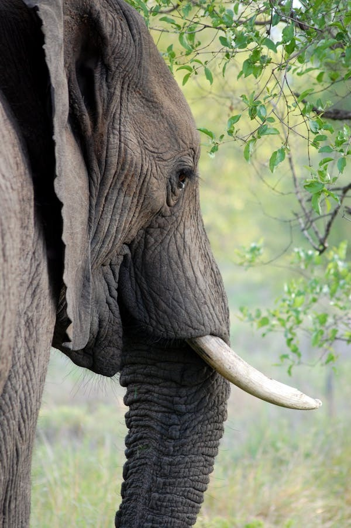

|
|
The African savannah elephant is the world largest land mammal.It lives across many different habitats ,including open savannahs,deserts,and forests.As these animals roam they play an important role within their ecosystem. They disperse seeds through their dung,helping to fertilise the land;they clear their paths through vegetation and overgrown bush, promoting plant diversity;and they use their tusks and feet to access water in dry riverbeds ,creating small watering holes for other animals. African savannah elephants are found in 23 countries across Africa.They have large population in Kenya,Botswana Namibia,Tanzania,South Africa ,Zambia, and Zimbabwe. The IUCN classifies the African savannah elephant as endangered .Thus means it is at a very high risk of extinction in the wild.Their numbers are also decreasing.These elephants are poached for their ivory and their natural habitats are converted into agricultural land and infrastructure by expanding human populations. IFAW is working to protect African Savannah elephants and conserve their remaining habitat through our Room to Room initiative |